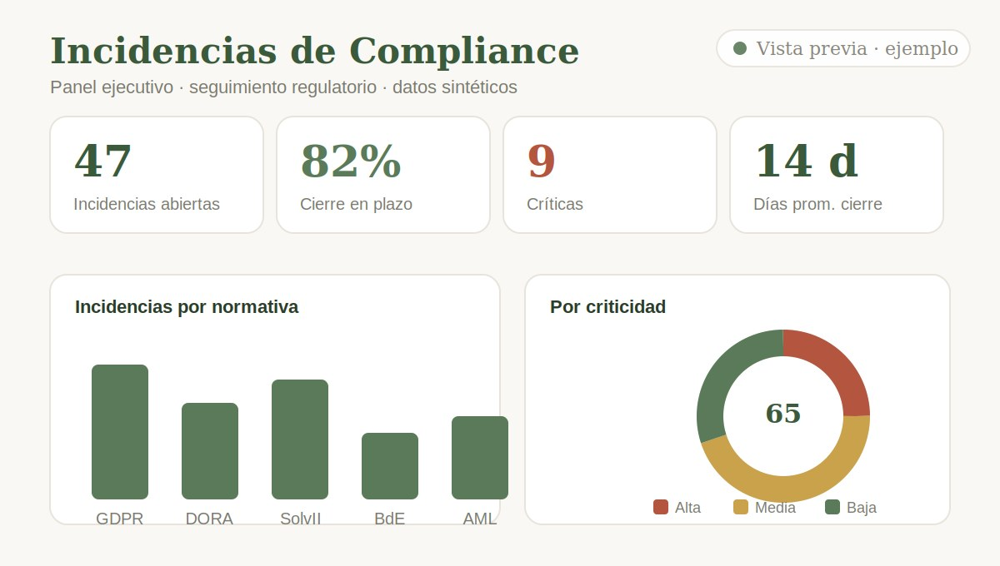
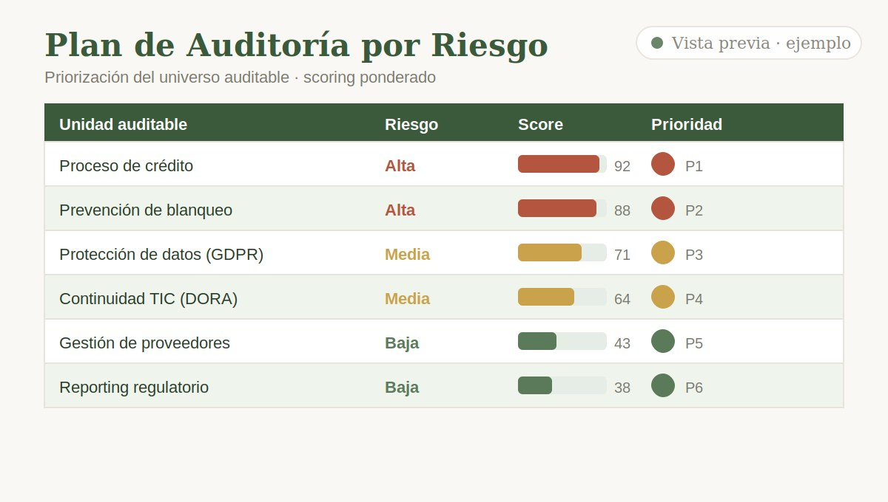
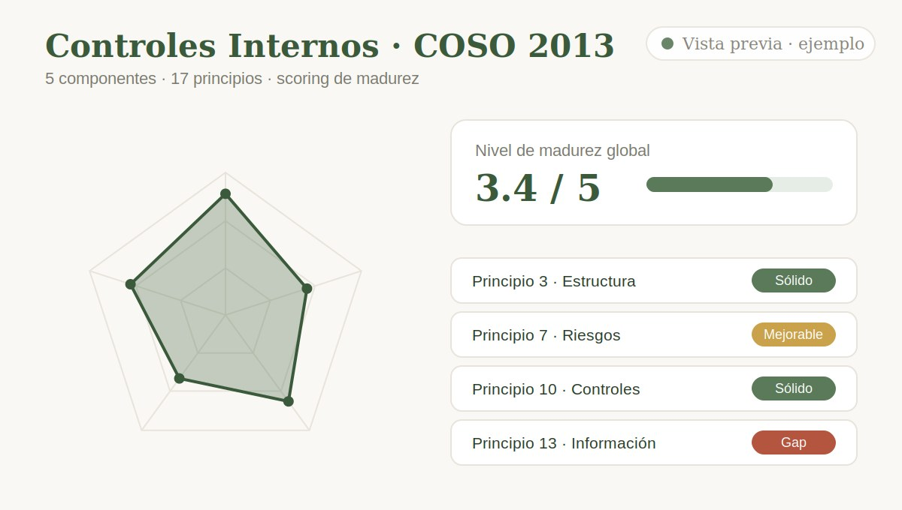

Madrid, España
Profesional de Compliance y Auditoría Interna en el sector financiero y asegurador, especializada en control interno, gestión de riesgos y reporting en entornos regulados.
Sobre mí
Profesional de Compliance y Auditoría Interna con más de 5 años en el sector financiero, actualmente en el equipo de Auditoría Interna de Santalucía (sector seguros), aplicando el marco regulatorio europeo: Solvencia II, DORA, GDPR y normativa del Banco de España.
Especializada en el seguimiento de incidencias de cumplimiento, la revisión de controles internos y la coordinación de planes de acción, combinando el rigor normativo con analítica de datos en Power BI, QlikView y Excel (MOS) y el uso de plataformas GRC como MetricStream. Su base administrativa y de gestión documental en banca aporta orientación al detalle y trazabilidad a cada proceso.
Trayectoria
Santalucía Servicios Compartidos — Madrid, España
Participo en el equipo de Auditoría Interna del grupo asegurador, colaborando en la ejecución de auditorías operativas y de cumplimiento bajo la regulación del mercado asegurador español. Apoyo en la revisión de controles internos, elaboración de informes de hallazgos y seguimiento de planes de mejora. Doy soporte en la documentación de procedimientos y matrices de riesgos, y colaboro en la elaboración de informes para la revisión del director de Auditoría y su presentación a la Comisión de Auditoría del Consejo de Administración.
Banco de Reservas — República Dominicana
Gestioné el monitoreo y seguimiento de incidencias de cumplimiento en la mayor entidad financiera del Estado dominicano (activos superiores a USD 15.000 M). Analicé el impacto de cambios regulatorios, coordiné planes de acción correctivos asegurando su cierre en plazo y la alineación con los estándares de la Superintendencia de Bancos. Elaboré reportes periódicos de gestión para la dirección.
Banco de Reservas — República Dominicana
Presté soporte administrativo especializado a la Dirección de Capital Humano, asegurando el cumplimiento de procedimientos internos y normativos. Gestioné el control documental, la correspondencia institucional y la coordinación de agendas de dirección con altos estándares de confidencialidad. Colaboré en auditorías internas y verificaciones administrativas, garantizando trazabilidad y exactitud de la información.
Banco de Reservas — República Dominicana
Gestioné la digitalización, clasificación y control de expedientes críticos en la plataforma OnBase (ECM corporativo), garantizando estándares de calidad documental. Presté soporte a auditorías internas y validaciones administrativas, asegurando la integridad y disponibilidad de la información. Mantuve actualizado el archivo institucional digital con trazabilidad completa.
Competencias
Portafolio

Panel ejecutivo en Power BI que simula el seguimiento de incidencias regulatorias de una entidad financiera: KPIs de cumplimiento, análisis por normativa, criticidad y plazos de resolución.

Herramienta de priorización basada en riesgo que genera automáticamente un plan de auditoría a partir del universo auditable, aplicando scoring ponderado por impacto, regulación y hallazgos previos.

Herramienta de evaluación interactiva basada en los 5 componentes y 17 principios de COSO 2013, con scoring de madurez, radar chart y generación automática de informe de gaps.
Formación continua
Centro de Estudios Financieros (CEF) · Madrid
Microsoft
Ernesto Bazán Training Corporation
Universitat Politècnica de València (UPV)
Formación académica
Universidad del Caribe — República Dominicana
Cursando último añoUTAMED — Universidad Online
Mar 2026 – Sept 2026Universidad Nebrija
Sept 2026 – En cursoComunicación
Nativo
B2 — British Council · 2026
Hablemos
Disponible para nuevas oportunidades profesionales en compliance, auditoría, gestión de riesgos y control interno, en Madrid y alrededores.